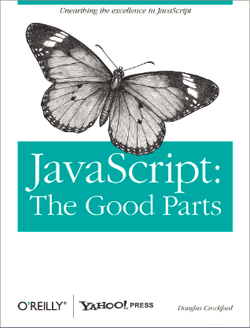
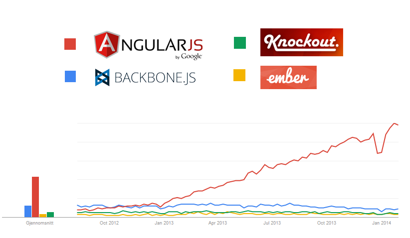

Hvordan lykkes med JavaScript
Mats Bolstad,
Systemutvikler i Steria
Agenda
- Intro
- Problemene med JavaScript
- De bra tingene
Intro
- Designet på 10 dager i 1995 av Brendand Eich i Netscape
- Kjøre i browser uten kompilering
- Et språk for ikke-profesjonelle programmerere
- Designet for å ligne på Java
Nettsider på 90-tallet
En enkel utvidelse av HTML
<input type="button" onclick="selectCountry()">
function selectCountry() {
var country = document.getElementById("country").value;
alert("Welcome to Apple in: " + country);
// ...
}
Paradigmer
- Dynamisk typet
myObject.a = 1;
myObject.a = "foo bar!"
Paradigmer
- Funksjonelt
var myFunction = function(){ }
// variabel: myFunction
// invokering: myFunction()
Paradigmer
- Objekt-orientert, men ikke klasser
var myConstructor = function() {
this.a = 1;
this.b = 2;
};
myConstructor.prototype = {
sum: function() {
return this.a + this.b
}
};
var myObject = new myConstructor;
// myObject.sum() => 3
Så hva er problemet med
JavaScript?
- En rangering fra 5 til 0 →
Anbefalt lesing
5. Sær typekonvertering
'\n 123 \t' == 123 // true
typeof NaN // "number"
var x = {}, y = {};
x == y // false
x >= y // true
x <= y // true
{} + [] // 0
{} + {} // NaN
[] + {} // "[object Object]"
4. Uvanlig håndtering av scope
Kun funksjonscope
function() {
if ( ... ) {
var foo = "bar";
}
// foo => "bar"
}
// foo => undefined
3. Forvirrende "this"
Globalt scope er fallback
funksjon() // this => 'globalt scope'
mittObjekt.funksjon() // this => mittObjekt
funksjon.call(mittObjekt) // this => mittObjekt
variabel = "foobar";
2. Vanskelig å forstå arv
Varebil.prototype = new Bil; // Varebil subklasser Bil
1. Dårlig implementasjon i browsere

- IE har imidlertid blitt mye bedre i senere versjoner.
- Feil og mangler i en browser kan rettes med polyfill-biblioteker.
Eksempel, få HTML5-støtte i <IE9
0. Mangel på abstraksjon
- jQuery har vært standardutrustning.
- Kan utføre magi, men gir ikke struktur til koden.
Eksempel på typisk jQuery-kode
$("form").on("submit", function () {
$.ajax({
url:"http://foo.no",
type:"get",
data:$("#foo [type=text]").val(),
error:function (error) {
$("#feilmeldingsboks").text(error);
},
success:function (data) {
$("#resultatTabell").empty();
JSON.parse(data).forEach(function (x) {
var rad = "" + x.navn + " Kan fort føre til spaghettikode

Hvordan få kontroll på
galskapen?
Benytt god programmeringsskikk
- Gi like mye kjærlighet til frontend som til backend.
- Designprinsipper som Separation of concern og Single responsibility principle gjelder også frontend.
Benytt kjente designpatterns
- Ikke manipuler DOM-en direkte, gjør abstraksjoner.
- Inndeling i f. eks. Model-View-Controller (MVC).
MVC i Backbone
var SearchFormView = Backbone.View.extend({
initialize: function() {
this.model = new SearchModel();
this.model.on("sync", this.render);
this.model.on("error", this.renderErrorMessage);
},
events: {
"form submit": "performSearch"
},
performSearch: function() {
this.model.fetch();
}
});
MV*-rammeverk i JS
Kilde: Google Trends
Finn riktig MV*-rammeverk
Samme applikasjon utviklet i 45 varianter.
Angular
"HTML enhanced for web apps"
<label>Name:
<input type="text" ng-model="yourName" placeholder="Enter a name here">
<hr>
<h1>Hello {{yourName}}!
Bruk de rette biblioteker
- JavaScript er full av feil, men finnes veldig mange biblioteker til språket.
- Kan fort skape flere problemer enn de løser, må velges med omhu.
Oppsummert
- De fleste av JavaScripts merkeligheter kommer man seg lett utenom. Ikke prøv å kode Java i JavaScript.
- Ikke gå "all-inn" med rammeverk.